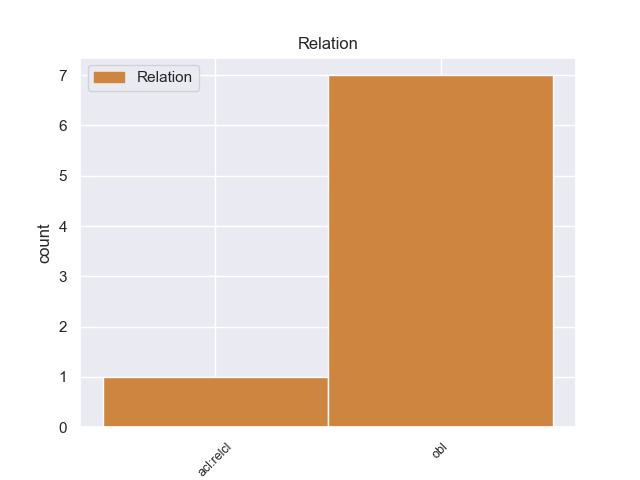
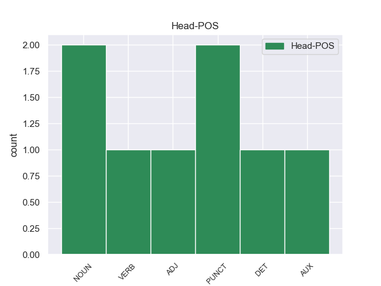
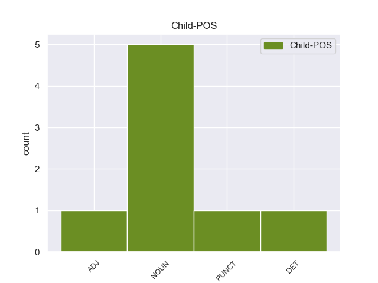

Distribution of features within this leaf



Agreement Rules sorted by frequency.
- When the dependent token is the oblique nominal(obl) of the head token,
1 Οι _ _ _ _ 0 _ _ _
2 ΗΠΑ _ _ _ _ 0 _ _ _
3 βρέθηκαν βρέθηκανς NOUN _ Case=Gen|Gender=Fem|Number=Sing 0 _ _ _
4 σ _ _ _ _ 0 _ _ _
5 την _ _ _ _ 0 _ _ _
6 46η _ _ _ _ 0 _ _ _
7 θέση _ _ _ _ 0 _ _ _
8 το _ _ _ _ 0 _ _ _
9 2014 _ _ _ _ 0 _ _ _
10 , _ _ _ _ 0 _ _ _
11 ενώ _ _ _ _ 0 _ _ _
12 την _ _ _ _ 0 _ _ _
13 αμέσως _ _ _ _ 0 _ _ _
14 προηγούμενη _ _ _ _ 0 _ _ _
15 χρονιά _ _ _ _ 0 _ _ _
16 είχαν _ _ _ _ 0 _ _ _
17 καταταχθεί _ _ _ _ 0 _ _ _
18 σ _ _ _ _ 0 _ _ _
19 την _ _ _ _ 0 _ _ _
20 33η 33ης NOUN _ Case=Gen|Definite=Def|Gender=Fem|Number=Sing|PronType=Art 3 obl _ _
21 θέση _ _ _ _ 0 _ _ _
22 . _ _ _ _ 0 _ _ _
Disagree Examples:
1 Σ' _ _ _ _ 0 _ _ _
2 αυτό _ _ _ _ 0 _ _ _
3 το _ _ _ _ 0 _ _ _
4 σημείο _ _ _ _ 0 _ _ _
5 , _ _ _ _ 0 _ _ _
6 κύριε _ _ _ _ 0 _ _ _
7 Προεδρεύοντα _ _ _ _ 0 _ _ _
8 του _ _ _ _ 0 _ _ _
9 Συμβουλίου _ _ _ _ 0 _ _ _
10 , _ _ _ _ 0 _ _ _
11 σας _ _ _ _ 0 _ _ _
12 εφιστώ _ _ _ _ 0 _ _ _
13 την _ _ _ _ 0 _ _ _
14 προσοχή _ _ _ _ 0 _ _ _
15 σ _ _ _ _ 0 _ _ _
16 το _ _ _ _ 0 _ _ _
17 ψήφισμα ψήφισμα NOUN NOUN Case=Acc|Gender=Neut|Number=Sing 0 _ _ _
18 του _ _ _ _ 0 _ _ _
19 Ευρωπαϊκού _ _ _ _ 0 _ _ _
20 Κοινοβουλίου _ _ _ _ 0 _ _ _
21 σχετικά _ _ _ _ 0 _ _ _
22 με _ _ _ _ 0 _ _ _
23 τις _ _ _ _ 0 _ _ _
24 υπηρεσίες _ _ _ _ 0 _ _ _
25 γενικού _ _ _ _ 0 _ _ _
26 ενδιαφέροντος _ _ _ _ 0 _ _ _
27 , _ _ _ _ 0 _ _ _
28 που _ _ _ _ 0 _ _ _
29 ήταν _ _ _ _ 0 _ _ _
30 πολύ _ _ _ _ 0 _ _ _
31 σαφές σαφής ADJ ADJ Case=Nom|Gender=Neut|Number=Sing 17 acl:relcl _ SpaceAfter=No
32 . _ _ _ _ 0 _ _ _
1 Σ' _ _ _ _ 0 _ _ _
2 αυτό _ _ _ _ 0 _ _ _
3 το _ _ _ _ 0 _ _ _
4 θέμα θέμα NOUN NOUN Case=Acc|Gender=Neut|Number=Sing 7 obl _ _
5 είμαστε _ _ _ _ 0 _ _ _
6 πραγματικά _ _ _ _ 0 _ _ _
7 διατεθειμένοι διαθέτω VERB VERB Aspect=Perf|Case=Nom|Gender=Masc|Number=Plur|VerbForm=Part|Voice=Pass 0 _ _ _
8 να _ _ _ _ 0 _ _ _
9 υπερασπιστούμε _ _ _ _ 0 _ _ _
10 από _ _ _ _ 0 _ _ _
11 κοινού _ _ _ _ 0 _ _ _
12 το _ _ _ _ 0 _ _ _
13 σχέδιό _ _ _ _ 0 _ _ _
14 μας _ _ _ _ 0 _ _ _
15 . _ _ _ _ 0 _ _ _
1 Ας _ _ _ _ 0 _ _ _
2 μην _ _ _ _ 0 _ _ _
3 ξεχνάμε _ _ _ _ 0 _ _ _
4 ότι _ _ _ _ 0 _ _ _
5 οι _ _ _ _ 0 _ _ _
6 στόχοι _ _ _ _ 0 _ _ _
7 και _ _ _ _ 0 _ _ _
8 τα _ _ _ _ 0 _ _ _
9 μέτρα _ _ _ _ 0 _ _ _
10 της _ _ _ _ 0 _ _ _
11 επονομαζόμενης _ _ _ _ 0 _ _ _
12 ανοιχτής _ _ _ _ 0 _ _ _
13 διαδικασίας _ _ _ _ 0 _ _ _
14 συνεργασίας _ _ _ _ 0 _ _ _
15 με _ _ _ _ 0 _ _ _
16 τα _ _ _ _ 0 _ _ _
17 κράτη _ _ _ _ 0 _ _ _
18 μέλη _ _ _ _ 0 _ _ _
19 σ _ _ _ _ 0 _ _ _
20 τον _ _ _ _ 0 _ _ _
21 τομέα _ _ _ _ 0 _ _ _
22 της _ _ _ _ 0 _ _ _
23 εκπαίδευσης _ _ _ _ 0 _ _ _
24 θα _ _ _ _ 0 _ _ _
25 ήταν _ _ _ _ 0 _ _ _
26 σχεδόν _ _ _ _ 0 _ _ _
27 αδιανόητοι αδιανόητος ADJ ADJ Case=Nom|Gender=Masc|Number=Plur 0 _ _ _
28 χωρίς _ _ _ _ 0 _ _ _
29 τις _ _ _ _ 0 _ _ _
30 θετικές _ _ _ _ 0 _ _ _
31 εμπειρίες εμπειρία NOUN NOUN Case=Acc|Gender=Fem|Number=Plur 27 obl _ _
32 με _ _ _ _ 0 _ _ _
33 το _ _ _ _ 0 _ _ _
34 πρόγραμμα _ _ _ _ 0 _ _ _
35 ΣΩΚΡΑΤΗΣ _ _ _ _ 0 _ _ _
36 . _ _ _ _ 0 _ _ _
1 ( (ς PUNCT _ Case=Acc|Definite=Def|Gender=Fem|Number=Sing|PronType=Art 0 _ _ _
2 NL nlς PUNCT _ Case=Gen|Gender=Fem|Number=Sing 1 obl _ _
3 ) _ _ _ _ 0 _ _ _
1 Ελλάδα λλάδα DET _ Case=Acc|Definite=Def|Gender=Fem|Number=Sing|PronType=Art 0 _ _ _
2 : _ _ _ _ 0 _ _ _
3 61 _ _ _ _ 0 _ _ _
4 οι _ _ _ _ 0 _ _ _
5 νεκροί νεκρο NOUN _ Case=Gen|Gender=Fem|Number=Sing 1 obl _ _
6 από _ _ _ _ 0 _ _ _
7 γρίπη _ _ _ _ 0 _ _ _
8 . _ _ _ _ 0 _ _ _